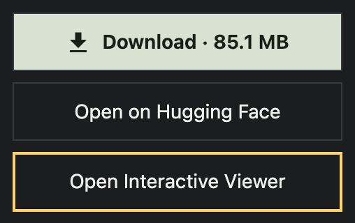
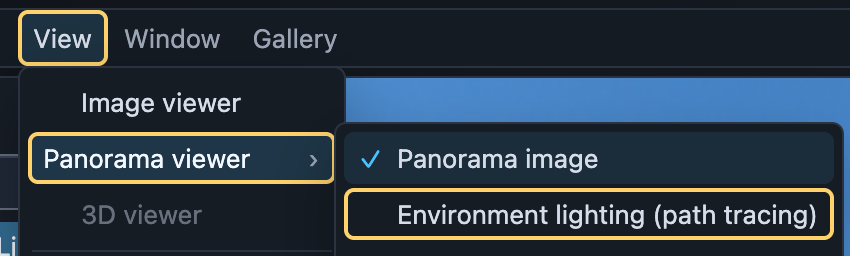
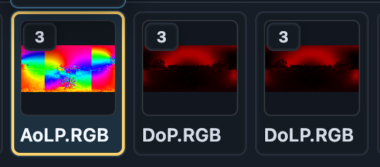
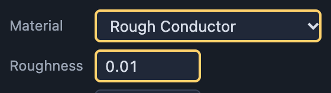

Polarization rendering in Plenoview
Try polarized environment lighting directly in your browser with Plenoview.

Render a scene
Open the viewer
Open any scene in the Dataset, click Open Interactive Viewer, and wait for the Duff-basis EXR to load in a new tab. (On a small screen, tap Scene info first.)

Turn on environment lighting
Open View → Panorama viewer and click Environment lighting (path tracing) to place the test spheres under the environment map.

Switch polarization channels
In the strip below the viewport, click AoLP.RGB for a view like the example above, or switch to DoLP.RGB and S0.RGB for polarization strength and intensity.

Adjust the material (optional)
If you want to test other surfaces, scroll to View in the right sidebar to change Material or Roughness, then let the preview refine.
